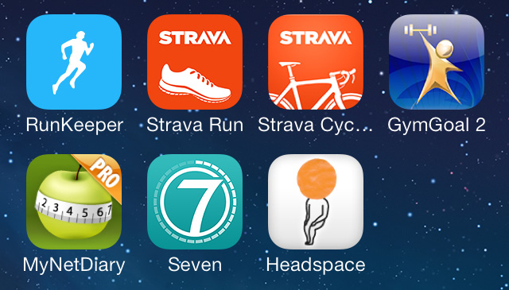
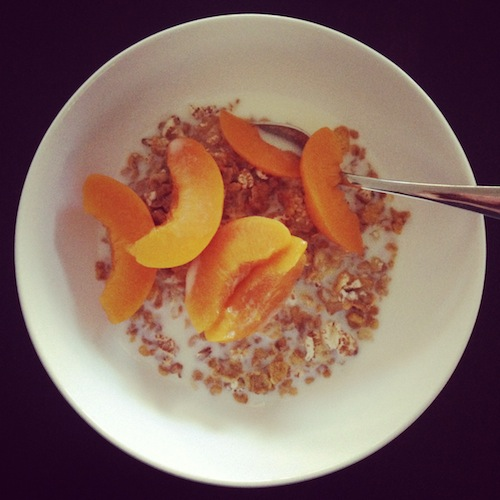

I have experienced a personal health renaissance over the last year. My iPhone1 is teaching me how to change my health, both body and mind. It has offered motivation when I needed it. I believe that the iHealth Renaissance is just getting started. It could do the same for you if you let it. Let me explain how.
It all started innocently enough on January 1, 2013 when I installed the first health app on my iPhone - RunKeeper, that I had heard about from a friend. I didn’t think I was that unfit as I cycled regularly, and was able to do 80km rides at a decent pace. I wanted to try something different, and decided to try running as I had never been a runner. I actually didn’t like it as I thought that I couldn’t do it - that I wasn’t built for it. I’m 189 cm (6 feet 2.4 inches), and was about 98 kg. Overweight for sure, but at the time not really concerned about it. My first run was the day after, January 2 when I ran 2.55 km at a pace of 6:42 per km, on a completely flat course.
RunKeeper gave me all sorts of rich feedback. Realtime audio feedback on my run. Visual statistics after my run and of all previous runs. I could easily hear, see and track my progress. The social networking that was built in took the feedback to the next level. Likes and comments on my runs, as well as being able to view friends runs, combined with the leaderboard, gave me more motivation. I was really enjoying running. I wasn’t conscious of why I kept coming back and using RunKeeper until I experienced a talk from Dr Jason Fox (a ‘motivation strategy and design expert’) at a technology conference later in the year.
RunKeeper had designed running to be inherently motivating. It reduced the latency between the effort and feedback. It enhanced the visibility of, and gave me a clear sense of progress. The more visible my progress, the more motivated I became. The more I ran.
After RunKeeper came Strava for my cycling. I think RunKeeper supported cycling as a different activity type but I knew friends using Strava for cycling. If you were around and using the Internet in the late 90s you will remember ICQ starting the IM (Instant Messaging) wars. Some friends were on RunKeeper, and some were on Strava. I was stuck with both, which really means three apps, as Strava has two - one for cycling and one for running. All this cardio meant that weights were next. Thoughts of figuring out how to do the exercises properly again, and setting up and recording scheduled routines did not motivate me at all. That’s when a friend put me on to GymGoal 2 which managed it all for me, and gave me visual help and feedback.
With 4 fitness apps installed and being used regularly next came changing what I put into my body. My wife installed and started using MyNetDiary which is essentially calorie counting, with once again, plenty of feedback that gave me a sense of progress. I could visually see how many calories I was consuming against how many I should consume to meet my target weight. What it did more than that though was teach me about what I was eating. I was shocked at a few things, for example almonds … holy crap! It hasn’t changed what I eat, as I still enjoy beer and chocolate, but it has changed my behaviour. I now think about the quality and quantity of what I will put into my body.

With 5 health apps installed and being used regularly I started seeing changes. 8 months of running, and 1.5 months of changing the way I eat I had dropped over 8 kg in weight, and could now comfortably run 5 km at a pace of 5:30 per km, with nice steep hills thrown in.
There are two more health apps that I have installed and started using. The first one I came across when I read an article The Scientific 7-Minute Workout. I thought that it would come in handy when I was short on time, and also as a good way to shake things up. Check out the ‘7 Minute Workout “Seven”’ app. The last one I came across when I read a Lifehacker article What Happens to the Brain When You Meditate (And How it Benefits You), that recommended an app created by a former Buddhist monk called Headspace. Check out the app ‘Headspace’, it’s meditation when and where you have the time, which for me is on my way to work on the bus. I’m really excited about giving meditation a go, and Headspace was built for the iHealth Renaissance.
I now have 7 health apps installed and being used, which is the majority category of apps that I use on my iPhone. I haven’t used a Nike+ Fuelband, Jawbone UP, or a Fitbit Flex, but I can see that the iHealth Renaissance is just starting, and that these are just early wearable accessory products.
It’s frustrating that I need multiple apps for the same thing, and also that I need to enter the same information into different apps. For example most of the health apps want to know my gender, age, height and weight, to be able to provide me meaningful feedback. Why do I need to provide my data multiple times?
It’s interesting looking at the move Apple has made with the iPhone 5s, by introducing a motion coprocessor called the M7, which continuously measures motion data and makes it available for apps. I can’t wait for the next generation of iHealth apps and wearable accessory products. I think we still need wearable accessory products as apps are tucked away nicely on your iPhone. You choose when to interact with them. We need devices that we can see that constantly motivate us. Devices that further reduce the latency between effort and feedback in an effortless, visual, motivational way. I think that these devices will still be accessory products that augment the core richer connected experience that can be delivered via your iPhone.
So the iHealth Renaissance is making good progress, but where is the iWealth Renaissance? The current batch of mobile apps from the financial services industry are primarily sales and service based. Buy this product. View and manage your accounts. They haven’t started to take the next step.
Footnotes
-
I use an iPhone. I use the term iPhone in this article to mean smartphone, or what I think of as a native Internet mobile personal assistant and augmentation device. ↩